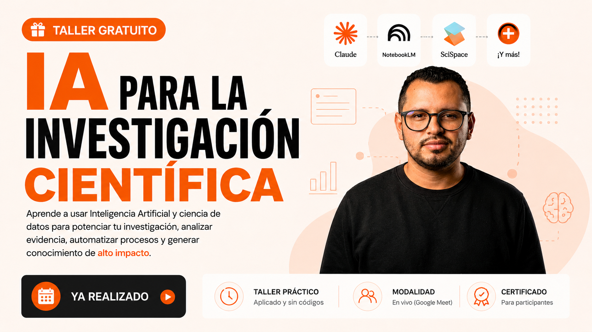

IA para la Investigación
Científica
Cómo aprovechar la Inteligencia Artificial en cada etapa de tu proceso investigativo: desde la formulación de propuestas hasta la publicación en revistas indexadas.
Vargas PinedaPhD Científico de Datos Docente Investigador PhD · Ciencias Agrarias Ver perfil completo →
El docente.

Por qué llegamos a este Taller Gratuito.
Dos espacios de formación previos que convergen en el taller gratuito de hoy.
Optimización de la Investigación con Inteligencia Artificial
Del Proyecto al Paper · Uso de IA para la Investigación
IA para la Investigación Científica
Los retos que optimizamos con IA.
Más que etapas, son los problemas reales del proceso investigativo. En cada uno, la Inteligencia Artificial acelera y potencia tu trabajo.
Formular la propuesta y el marco teórico
Estructurar un proyecto sólido desde cero.
Buscar y depurar la literatura científica
Filtrar miles de artículos y mapear el conocimiento.
Procesar y analizar los datos
Estadística, modelos y visualización de resultados.
Redactar el artículo y elegir la revista
Del manuscrito final a la revista indexada.
Formulación del proyecto.
Un prompt para formular tu proyecto.
Búsqueda especializada.
Análisis de datos.
Redacción y publicación.
Un abstract para hallar revista y referencias.
El acelerado cambio climático global representa una amenaza crítica para los ecosistemas de alta montaña, cuya vulnerabilidad intrínseca compromete tanto la biodiversidad endémica como la seguridad hídrica de las comunidades cuenca abajo. Este estudio examina la trayectoria espacio-temporal del estrés térmico y su correlación con la pérdida de biomasa y la alteración de servicios ecosistémicos en los Andes Septentrionales. Implementamos un marco metodológico híbrido que integra imágenes satelitales de alta resolución (Sentinel-2 y Landsat 9) recopiladas entre 2015 y 2025, calibradas mediante redes neuronales profundas (DNN) y modelos de ecuaciones estructurales.
Nuestros hallazgos proyectan un incremento de temperatura media superficial de 1.8 °C para el año 2050 bajo el escenario de emisiones SSP2-4.5. Este aumento se asocia directamente con una retrocesión glaciar del 24 %, una disminución del 18 % en la capacidad de retención de agua de los suelos de páramo y una fragmentación severa del hábitat de especies arbustivas clave. Asimismo, las simulaciones socioeconómicas indican que la variabilidad en los caudales hídricos incrementará la vulnerabilidad del 35 % de los asentamientos rurales dependientes de la agricultura de subsistencia.
La novedad de esta investigación radica en la cuantificación de umbrales críticos de no retorno (tipping points) socioecológicos, demostrando que la degradación de la vegetación nativa acelera la desgasificación de carbono orgánico del suelo a tasas un 12 % superiores a las estimaciones previas. En conclusión, los datos sugieren que las estrategias de mitigación actuales resultan insuficientes sin una intervención centrada en la restauración ecológica dirigida y la gobernanza adaptativa del agua. Este trabajo proporciona una herramienta predictiva de acceso abierto para la toma de decisiones informada en políticas de conservación y planificación territorial frente a la crisis climática global.
IA para la Investigación
Científica
El programa completo para dominar la Inteligencia Artificial en todo tu proceso investigativo: de la propuesta al artículo publicado.
Tu ruta de investigación asistida con IA.
Un recorrido práctico por el ciclo de vida de la investigación científica, integrando asistentes y herramientas de IA generativa.
Formulación de Propuestas de Investigación
Estructuración acelerada de proyectos. Construye bases sólidas, marcos teóricos y conceptuales mediante agentes y cuadernos de asistencia inteligente.
Búsqueda y Procesamiento de Información Científica
Exploración bibliométrica y cientometría. Filtrado avanzado de literatura en bases globales, mapeo de conocimiento y redes científicas.
Procesamiento y Análisis de Datos y Resultados
Asistencia de IA para análisis estadístico. Generación de tablas, visualizaciones avanzadas y estadística descriptiva e inferencial.
Redacción de Artículos y Revista Objetivo
De los hallazgos al manuscrito final. Síntesis de literatura, redacción asistida, formato IMRyD y pipeline de programación e IA.
Herramientas que dominarás.
Aprenderás a usar e integrar estas herramientas en tu flujo de investigación — un ecosistema digital que acelera tu trabajo científico.
Python
Análisis y procesamiento de datos
ChatGPT
Redacción y análisis asistido
Claude
Investigación y código
Perplexity
Búsqueda académica con IA
SciSpace
Comprensión de literatura
Scopus
Base de datos científica global
Tree of Science
Árbol de la ciencia
Bibliometrix
Análisis bibliométrico en R
RStudio
Entorno de análisis estadístico
NotebookLM
Cuaderno sintético de investigación
Invierte en tu formación investigativa.
Inversión única
- Inicia 20 de agosto
- 20 horas en vivo
- 4 módulos especializados
- Plantillas y prompts
- Certificado oficial
- Acceso a grabaciones
HRS
IA para la Investigación Científica · 20 horas
La IA propone.
El investigador decide.
En cada sesión la IA acelera tu trabajo, pero el criterio, la verificación y la responsabilidad son tuyos. Empieza el 20 de agosto de 2026.